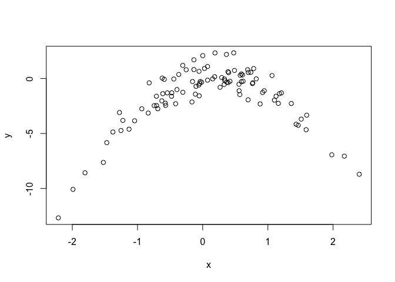

library(ISLR)
library(boot)
set.seed(0)
Default <- na.omit(Default)
m0 <- glm(default ~ income + balance, data = Default, family = "binomial")
summary(m0)
##
## Call:
## glm(formula = default ~ income + balance, family = "binomial",
## data = Default)
##
## Deviance Residuals:
## Min 1Q Median 3Q Max
## -2.4725 -0.1444 -0.0574 -0.0211 3.7245
##
## Coefficients:
## Estimate Std. Error z value Pr(>|z|)
## (Intercept) -1.154e+01 4.348e-01 -26.545 < 2e-16 ***
## income 2.081e-05 4.985e-06 4.174 2.99e-05 ***
## balance 5.647e-03 2.274e-04 24.836 < 2e-16 ***
## ---
## Signif. codes: 0 '***' 0.001 '**' 0.01 '*' 0.05 '.' 0.1 ' ' 1
##
## (Dispersion parameter for binomial family taken to be 1)
##
## Null deviance: 2920.6 on 9999 degrees of freedom
## Residual deviance: 1579.0 on 9997 degrees of freedom
## AIC: 1585
##
## Number of Fisher Scoring iterations: 8
validation_error_5b <- function() {
# Predictors are income and balance
# (i):
n <- dim(Default)[1]
training_samples <- sample(1:n, floor(n/2))
validation_samples <- (1:n)[-training_samples]
# (ii):
m <- glm(default ~ income + balance, data = Default, family = "binomial", subset = training_samples)
# Results from 'predict' are in terms of log odds or the logit tranformation of the probabilities
predictions <- predict(m, newdata = Default[validation_samples, ])
default <- factor(rep("No", length(validation_samples)), c("No", "Yes"))
default[predictions > 0] <- factor("Yes", c("No", "Yes"))
validation_error_rate <- mean(default != Default[validation_samples, ]$default)
}
v_error = validation_error_5b()
v_errors <- rep(0, 3)
for (i in 1:length(v_errors)) {
v_errors[i] = validation_error_5b()
}
Validation set error is: 0.0268.
Three more estimates of the validation set error would give: 0.0236, 0.026, 0.0304.
validation_error_5d <- function() {
# Predictors are income, balance, AND student
# (i):
n <- dim(Default)[1]
training_samples <- sample(1:n, floor(n/2))
validation_samples <- (1:n)[-training_samples]
# (ii):
m <- glm(default ~ income + balance + student, data = Default, family = "binomial", subset = training_samples)
# Results from 'predict' are in terms of log odds or the logit tranformation of the probabilities
predictions <- predict(m, newdata = Default[validation_samples, ])
default <- factor(rep("No", length(validation_samples)), c("No", "Yes"))
default[predictions > 0] <- factor("Yes", c("No", "Yes"))
validation_error_rate <- mean(default != Default[validation_samples, ]$default)
}
v_error = validation_error_5d()
Using the predictor student, our validation set error is: 0.0272.
set.seed(0)
Default <- na.omit(Default)
# Estimate the base model (to get standard errors of the coefficients):
m0 <- glm(default ~ income + balance, data = Default, family = "binomial")
summary(m0)
##
## Call:
## glm(formula = default ~ income + balance, family = "binomial",
## data = Default)
##
## Deviance Residuals:
## Min 1Q Median 3Q Max
## -2.4725 -0.1444 -0.0574 -0.0211 3.7245
##
## Coefficients:
## Estimate Std. Error z value Pr(>|z|)
## (Intercept) -1.154e+01 4.348e-01 -26.545 < 2e-16 ***
## income 2.081e-05 4.985e-06 4.174 2.99e-05 ***
## balance 5.647e-03 2.274e-04 24.836 < 2e-16 ***
## ---
## Signif. codes: 0 '***' 0.001 '**' 0.01 '*' 0.05 '.' 0.1 ' ' 1
##
## (Dispersion parameter for binomial family taken to be 1)
##
## Null deviance: 2920.6 on 9999 degrees of freedom
## Residual deviance: 1579.0 on 9997 degrees of freedom
## AIC: 1585
##
## Number of Fisher Scoring iterations: 8
boot.fn <- function(data, index) {
m <- glm(default ~ income + balance, data = data[index, ], family = "binomial")
return(coefficients(m))
}
boot.fn(Default, 1:10000) # test our boot function
## (Intercept) income balance
## -1.154047e+01 2.080898e-05 5.647103e-03
boot(Default, boot.fn, 1000)
##
## ORDINARY NONPARAMETRIC BOOTSTRAP
##
##
## Call:
## boot(data = Default, statistic = boot.fn, R = 1000)
##
##
## Bootstrap Statistics :
## original bias std. error
## t1* -1.154047e+01 -3.566749e-02 4.408921e-01
## t2* 2.080898e-05 2.589821e-07 4.968550e-06
## t3* 5.647103e-03 1.518670e-05 2.332941e-04
set.seed(0)
# Part (a):
m_0 <- glm(Direction ~ Lag1 + Lag2, data = Weekly, family = "binomial")
# Part (b):
m_loocv <- glm(Direction ~ Lag1 + Lag2, data = Weekly[-1, ], family = "binomial")
weekly_predict = predict(m_loocv, newdata = Weekly[1, ]) > 0
weekly_direction = Weekly[1, ]$Direction
Prediction on first sample is TRUE (1=>Up; 0=>Down)
First samples true direction is Down
n <- dim(Weekly)[1]
number_of_errors <- 0
for (ii in 1:n) {
m_loocv <- glm(Direction ~ Lag1 + Lag2, data = Weekly[-ii, ], family = "binomial")
error_1 <- (predict(m_loocv, newdata = Weekly[ii, ]) > 0) & (Weekly[ii, ]$Direction == "Down")
error_2 <- (predict(m_loocv, newdata = Weekly[ii, ]) < 0) & (Weekly[ii, ]$Direction == "Up")
if (error_1 | error_2) {
number_of_errors <- number_of_errors + 1
}
}
LOOCV_test_error_rate = sprintf("%10.6f", number_of_errors/n)
LOOCV test error rate = 0.449954
# Part (a):
set.seed(1)
x <- rnorm(100)
y <- x - 2 * x^2 + rnorm(100)
plot(x, y)

# dev.off()
DF <- data.frame(y = y, x = x)
# Do cross-validation on each model:
m_i <- glm(y ~ x, data = DF)
cv.err <- cv.glm(DF, m_i)
result = sprintf("%10.6f", cv.err$delta[1])
Model (i): cv output= 7.288162
m_ii <- glm(y ~ x + I(x^2), data = DF)
cv.err <- cv.glm(DF, m_ii)
result = sprintf("%10.6f", cv.err$delta[1])
Model (ii): cv output= 0.937424
m_iii <- glm(y ~ x + I(x^2) + I(x^3), data = DF)
cv.err <- cv.glm(DF, m_iii)
result = sprintf("%10.6f", cv.err$delta[1])
Model (iii): cv output= 0.956622
m_iv <- glm(y ~ x + I(x^2) + I(x^3) + I(x^4), data = DF)
cv.err <- cv.glm(DF, m_iv)
result = sprintf("%10.6f", cv.err$delta[1])
Model (iv): cv output= 0.953905
library(MASS)
Boston <- na.omit(Boston)
# Part (a):
mu_hat <- mean(Boston$medv)
# Part (b):
n <- dim(Boston)[1]
mu_se <- sd(Boston$medv)/sqrt(n)
mean_boot.fn <- function(data, index) {
mean(data[index])
}
boot(Boston$medv, mean_boot.fn, 1000)
##
## ORDINARY NONPARAMETRIC BOOTSTRAP
##
##
## Call:
## boot(data = Boston$medv, statistic = mean_boot.fn, R = 1000)
##
##
## Bootstrap Statistics :
## original bias std. error
## t1* 22.53281 0.00975415 0.4130483
# Part (e):
median(Boston$medv)
## [1] 21.2
median_boot.fn <- function(data, index) {
median(data[index])
}
boot(Boston$medv, median_boot.fn, 1000)
##
## ORDINARY NONPARAMETRIC BOOTSTRAP
##
##
## Call:
## boot(data = Boston$medv, statistic = median_boot.fn, R = 1000)
##
##
## Bootstrap Statistics :
## original bias std. error
## t1* 21.2 -0.0127 0.3869347
# Part (g):
quantile(Boston$medv, probs = c(0.1))
## 10%
## 12.75
ten_percent_boot.fn <- function(data, index) {
quantile(data[index], probs = c(0.1))
}
boot(Boston$medv, ten_percent_boot.fn, 1000)
##
## ORDINARY NONPARAMETRIC BOOTSTRAP
##
##
## Call:
## boot(data = Boston$medv, statistic = ten_percent_boot.fn, R = 1000)
##
##
## Bootstrap Statistics :
## original bias std. error
## t1* 12.75 0.0038 0.5127948